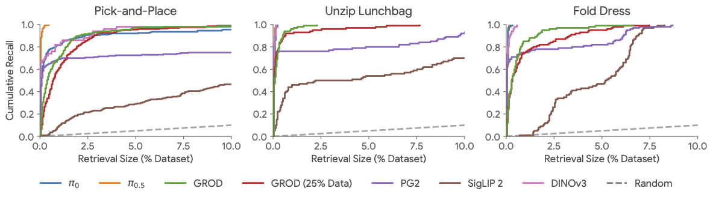
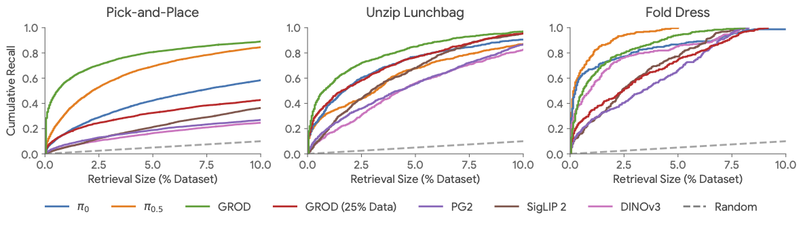
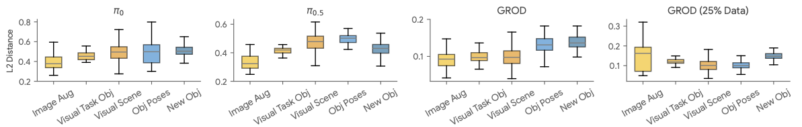
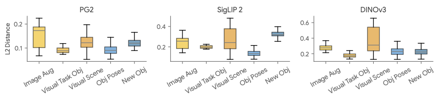

Controlled Experiments
We evaluate RADAR on three task families on the ALOHA 2 platform, with over 2,300 annotated task variations that are unseen by the VLAs whose embeddings we use.
Task Families

Retrieval Performance
We evaluate how recall of relevant training examples scales with retrieval set size. We compare VLA-based embeddings ($\pi_0$, $\pi_{0.5}$, Gemini Robotics On-Device/GROD) against baselines that do not use robot data (PaliGemma 2, SigLIP 2, DINOv3).


Embedding Distance Structure
VLA embeddings — especially GROD — exhibit larger distances for behavioral perturbations (blue) than visual perturbations (orange), a key property enabling effective retrieval. Baselines that do not use robot data lack this structure.


VLM Analysis Results
We benchmark different versions of Gemini on their ability to classify generalization when comparing evaluation tasks against retrieved data.
| Task | VLM | In-Dist Acc | Visual Acc | Behavioral Acc | Overall Acc |
|---|---|---|---|---|---|
| Pick-and-Place | |||||
| Gemini 3.0 Flash | 91.3 | 73.9 | 92.4 | 85.9 | |
| Gemini 3.0 Pro | 99.0 | 80.9 | 85.6 | 88.5 | |
| Gemini 3.1 Pro | 94.9 | 82.7 | 100.0 | 92.5 | |
| Unzip Lunchbag | |||||
| Gemini 3.0 Flash | 96.0 | 58.7 | 52.0 | 68.9 | |
| Gemini 3.0 Pro | 100.0 | 29.8 | 4.2 | 44.7 | |
| Gemini 3.1 Pro | 93.8 | 71.4 | 54.0 | 72.8 | |
| Fold Dress | |||||
| Gemini 3.0 Flash | 91.7 | 39.1 | 51.0 | 60.6 | |
| Gemini 3.0 Pro | 95.9 | 12.8 | 12.5 | 40.4 | |
| Gemini 3.1 Pro | 98.0 | 33.3 | 33.3 | 55.2 | |